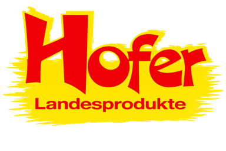

SäenVertragsanbau & Planung
Mengen und Flächen planen wir direkt mit unseren Erzeugern — bevor der erste Halm steht.

+43 5577 84 740Seit 1996 · 5 Länder · 25+ Produktkategorien
Für die Landwirtschaft: Heu, Kohle, Bäume, Stroh, Luzerne, Einstreu, Dünger und Biogas-Substrate — direkt vom Erzeuger zum Betrieb. Dazu Spezialtransporte und Verzollung EU ↔ Schweiz.
Warmluftheu, Luzerne und Maissilage — staubarm, energiereich, auf Wunsch in Bio-Qualität.
Stroh in allen Schnittlängen, Dinkelspelzen-Pellets und Kakaoschalen — saugstark und staubarm.
Hühnermistpellets, Kompost und Gärrest — organisch, lagerfähig und streufähig.
Maispellets und Substrate für Nawaro-Anlagen — hohe Energiedichte, verlässlich disponiert.
1996 haben Hermann und Michael Hofer den elterlichen Hof übernommen und mit dem Handel begonnen. Heute beliefern wir über 700 Stammkunden in fünf Ländern — mit eigener Flotte, eigenem Lager und einem Sortiment von mehr als 25 Kategorien. Wir reden nicht über Verlässlichkeit. Wir liefern sie.
Mengen und Flächen planen wir direkt mit unseren Erzeugern — bevor der erste Halm steht.
Kurze Erntefenster, lange Tage. Gepresst, getrocknet und geprüft wird vor Ort — Qualität entsteht auf dem Feld.
Trocken, belüftet, dokumentiert. Was im Herbst sauber eingelagert ist, kommt im Februar sauber auf Ihren Hof.
Geliefert wird das ganze Jahr — mit 14 eigenen Fahrzeugen, disponiert aus Lustenau, termintreu in fünf Ländern.
„Bestellt ist bei Hofer so gut wie geliefert — seit fünfzehn Jahren, ohne Ausreden.“— Milchviehbetrieb im Allgäu
Mo–Fr 07:00–17:00 · Werktags antworten wir innerhalb von 24 Stunden.